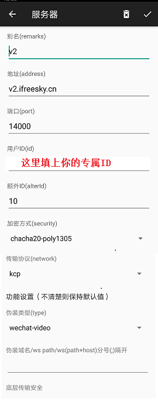
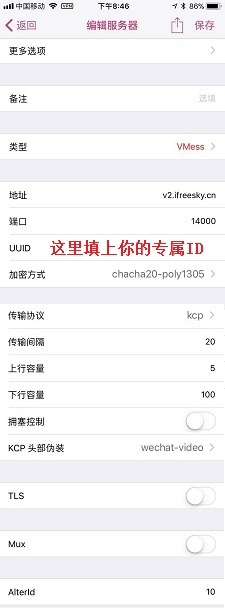

一、Windows客户端
下载 config.json 文件，并替换原来的同名文件。
二、安卓手机/平板 客户端
把下图中的地址 v2.ifreesky.cn 改成 vip.ifreesky.cn
填上你的专属ID: 23584446-ba73-6f88-0011-d5c144da32e1

如上图配置好之后，点击左下角画斜杠的纸飞机，变成没有斜杠的样子
然后打开手机浏览器就可以访问google, youtube之类的网站了。
三、苹果手机iPhone/平板iPad
把下图中的地址 v2.ifreesky.cn 改成 vip.ifreesky.cn
填上你的专属ID: 23584446-ba73-6f88-0011-d5c144da32e1
***注意每一个参数都要配置的一模一样

四、苹果电脑Mac系统 下载
打开解压后的文件夹，用上面修改后的 config.json 替换同名文件。
然后打开v2ray，设置socks代理，即可通过浏览器访问google。
Mac系统设置全局socks代理方法如下
点击右上角无线网络图标，选择 "打开网络偏好设置..."，点 "高级..."，选 "代理"，设置如下

或者
下载V2RayX 使用方法请自行上网查找，参数设置参考安卓。
V2RayX参考配置
V2RayX参考视频
五、Linux系统
以Ubuntu系统为例
1.打开终端，执行安装指令
$ bash <(curl -L -s https://install.direct/go.sh)
2.安装后的配置文件config.json在/etc/v2ray目录下
3.先停止v2ray
$ service v2ray stop
4.把配置好的config.json文件(可以拷贝windows下的该文件)覆盖原来的文件
比如修改后的 config.json 文件在 /home/user/Downloads/v2ray/ 目录下
$ cd /et/v2ray
$ sudo cp /home/user/Downloads/v2ray/config.json config.json
5.启动v2ray
$ service v2ray start
6.打开火狐Firefox，设置代理如下
菜单[Edit-Preference]进入Advanced页面，选择[Network]Tab页，
在 Connection Setting... 里面配置手动代理Socks V5.

7.在地址栏输入google.com，就可以访问了。
使用中有任何问题，请扫码入群讨论或加群主微信 Freeskyv